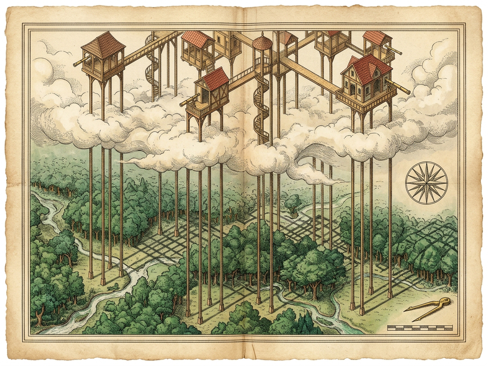
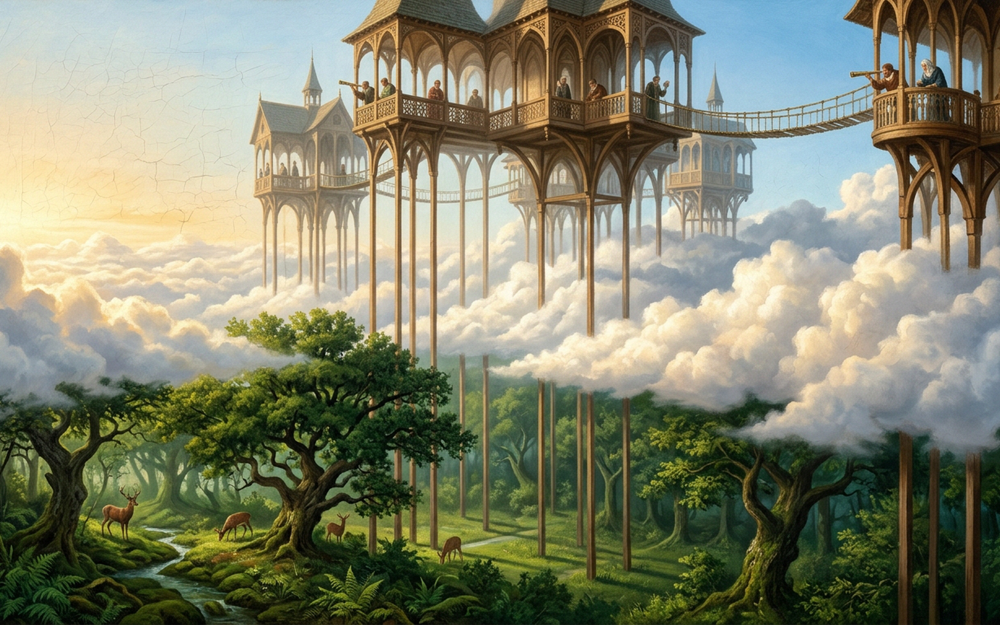

BAUCIS
Nine Slender Flamingo Stilts Above the Cumulus
7-Day March
Day 7 · Unseen Arrival
-
+
Ladder Elevation
88% · Belvedere
Sun & Lattice
Pierced Shadow: ACTIVE
CSunny
DDescend Ladder
MSound
RRestore Absence
PRoyal Plates
1x
8x Leaf
24x Stone
64x Ant
QLeaf
WStone
EAnt
Aim downward brass spyglass across the glade · Wheel or [Z] cycles magnification
They despise the mire below and suspend every beam in clear air above it.
They respect the woodland soil so deeply that they avoid every trace of contact.
They love the earth as it was before they existed, contemplating their own absence.
Absence Fascination 0.84
Leaves 1/6
Stones 0/6
Ants 0/6
8x Brass Spyglass · Leaf by Leaf
Sun-Dappled Woodland Frond
Untouched dew beads and crisp angular eave-shadow rest across emerald veins.
BAUCIS · PLATES OF ELEVATION & ABSENCE
Diptych
Cartographic Map
City Vista
Z1.75x Loupe
EscClose

Cartographic Survey · Nine Slender Flamingo Stilts, Cloud Rifts & Angular Foliage Shadow

City Vista · Timber Belvederes Above the Cumulus & Downward Brass Telescopes